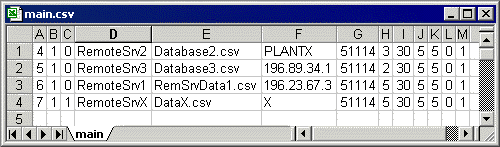

This file stores the specific configuration of all the servers within
the WanClient.

The columns, in the order that they appear in the file:
ID
Number: This stores a unique number that identifies the server.
Note: This
number must never be greater than the number in the first column of the
System.CSV file.
Server
Enabled: This stores the enabled status of the server, if the server
is enabled this is 1, otherwise if the server is disabled this is 0.
Server
Deleted: This stores the deleted status of the server, if the server
is deleted this is 0, otherwise if the server is not deleted this is 1.
If the server is deleted then it will be added to the
list of servers to be recovered, until the Pack
Database file menu item is executed, after which it is permanently
removed from this file.
Server
Title: This stores the name that has been given to the server,
which must not more than 90 characters in length.
Server
Database: This stores the name of the CSV file, that is also stored
in the database folder.
This file stores all the tag groups and tag links that
belong to the server.
IP
Address: This stores the IP address of the WanClient computer or
its computer name (provided that the network has a LMHOSTS file or a WINS
server to resolve IP addresses from computer names).
Port:
This stores the IP port that is used by Wanlink for communications and
this can only be set to 51114.
Retries:
This stores the number of times that communications are to be reattempted
when the communications to this WanServer fail.
Ping
Period: This stores the period in seconds to wait after the communications
to this WanServer fail before the WanClient will retry to establish communications.
Connect
Timeout: This is not being used.
Transaction
Timeout: This stores the time in seconds before a requested transaction
made to the server fails.
The default value of 5 is required for fast networks
and a value from 15 – 20 can be used for slower networks.
Beep
Enabled: This stores the Beep status of the server, which is configured
from the Enable Beep menu item from the Diagnostics menu.
If the server is beep enabled this is 1 and the server
will beep every communication cycle, otherwise if the server is beep disabled
this is 0, and the server will be silent.
Disk
Log Enabled: This stores the Disk Log status of the server, which
is either configured from the Enable Disk Log menu item from the Diagnostics
menu or directly within the wanserver.ini file.
To enable debug disk logging set this to 1 and a file
called "wanserverlog.txt", is generated in the Adroit folder,
that contains a shadowed list of the transactions that are recorded in
the WanServer window, for troubleshooting purposes.
Otherwise, set this to 0 to disable debug logging for
this server.